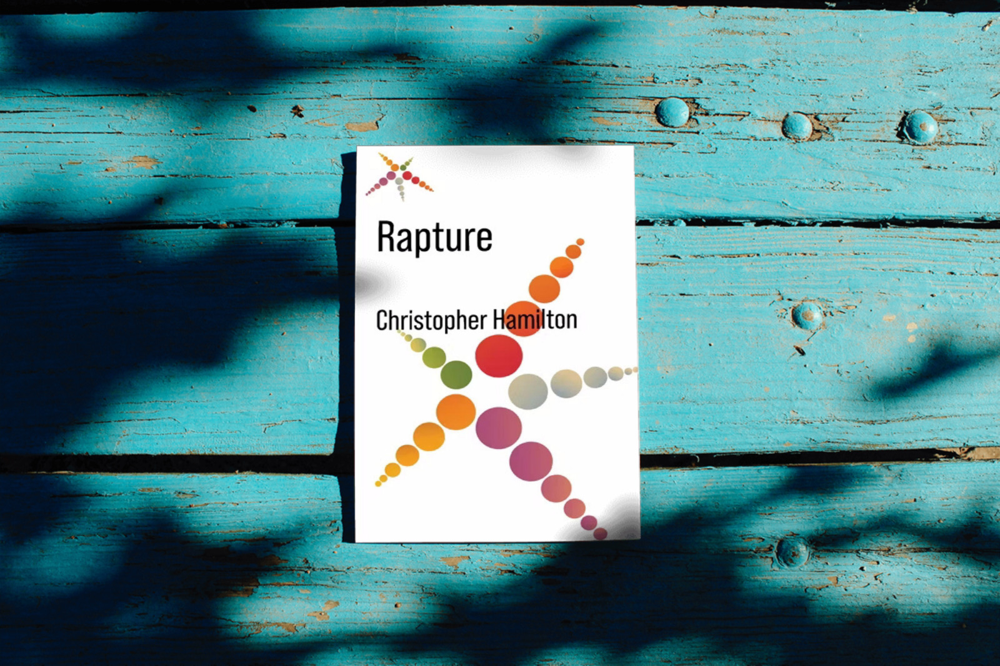

Christopher Hamilton: Rapture
Book review
Christopher Hamilton’s “Rapture” is a very pleasant, well-written, intelligent, and inspiring essay on the many meanings of human lives. On the downside, its essayistic nature also means that it somewhat lacks focus and direction. It can be a wonderful, eye-opening book for the right reader and if approached with the right expectations.

Hamilton, Christopher (2024). Rapture. Columbia University Press. 156 pages. Kindle: 9.99 USD, Paperback: 20 USD, Hardcover: 80 USD. Get your copy here: Amazon US — Amazon UK — Publisher’s website
If you like reading about philosophy, here's a free, weekly newsletter with articles just like this one: Send it to me!
The book
One can simply feel a sense of coming alive through being in contact with these examples, as one can come alive, for example, in reading great imaginative literature or watching an absorbing and surprising film or contemplating a marvelous painting or the like. Here it is a matter of being vivified by this contact — and it may be nothing more. But that, to my mind, is already a lot — perhaps because that is, after all, in a sense, a way of making space in one’s life for a moment of rapture. Nietzsche said that Montaigne made life worth living, and I think he meant by that that reading Montaigne made him feel he had come alive (…)
This short quote from the introduction to the book could be a fitting description of the book itself. Learned, inspiring, drawing parallels between seemingly unrelated phenomena and thinkers (Nietzsche and Montaigne!), the author essentially describes his own project: How reading Rapture can make the reader “feel a sense of coming alive through being in contact” with the lives presented as examples by the author.
The title of the book, by the way, might mislead some readers: this is not a religious book. It talks about “rapture” in a secular sense: something like the intense perception of one’s life, being-alive to a heightened degree.

The examples, perhaps with one exception, are selected to make each a particular point, but also to attract a particular audience by presenting names and topics that can be expected to be irresistible to them: Nietzsche, Werner Herzog, Rousseau, Buddhist retreats in the peaceful English countryside, Virginia Woolf’s The Waves, Proust, Chekhov, and many, many more names from the bestseller list of the spiritually awakened Western reader with Zen leanings, Leonard Cohen on the car stereo, and one or two Paulo Coelho or Alan Watts books on the shelf. This is not disparaging, by the way: it describes me more than anyone else.
The author
Christopher Hamilton (make sure you pick the right one when you look him up – there are other notable figures with that name) is a Professor of Philosophy and Religion at King’s College, London. He studied philosophy and literature in Germany, worked as a secondary school teacher, lived and worked in Salzburg, Austria, and was a visiting professor in Italy.

Superhero Thought Experiments
Superhero Thought Experiments, by Chris Gavaler and Nathaniel Goldberg, is a very enjoyable book that presents classic arguments from philosophy by discussing examples of superhero comics.
He is therefore precisely the kind of philosopher that I admire and that I wish we had more of. Someone who has survived teaching in a secondary school cannot be a wholly uninteresting person, and his life in German-speaking countries has inspired many of his publications and also his interest in Nietzsche. He is interested in literature and the arts, too, as becomes very clear when one looks at Rapture, and he has worked on the nature of good and evil, the philosophy of ageing and of autobiography, and the study of tragedy.
His professional bio states:
He believes that philosophy has largely lost touch with the ancient goals of seeking wisdom and exploring the meaning of life, and these topics are central in his research.
In short: He is the type of philosopher who fits in perfectly with Daily Philosophy’s mission. He has taught Ethics, Philosophy of Religion, Philosophy and Literature, and Philosophy and Film. He has also worked on the philosophy of ageing and death.
Some of his publications include papers on Simone Weil, The Ethics of Ageing in Frank Perry’s “The Swimmer,” The Cambridge Handbook of the Ethics of Ageing, a paper on hope and rapture, Walter Benjamin, the meaning of life, forgiveness and dealing with adversity, “Body, Memory and Irrelevancies in Hiroshima mon amour,” philosophy as spiritual practice, virtue and human flourishing, punishment, enjoyment, Werner Herzog, Derrida, sexual desire, and the moral status of animals.
This list already gives quite a good picture of what to expect of his latest book. Rapture draws on all of this past research (or should one say, past loves?) and this is both a good and a bad thing. It makes Rapture a very intelligent, rich and erudite work, informed by all those very different interests of its author. But the book, as the list above, also tends to be sprawling, overly eclectic, and bringing (forcing?) together authors, works and thoughts in a way that sometimes borders on the chaotic.
Your ad-blocker ate the form? Just click here to subscribe!
Content
More precisely, the book is divided into an introduction and seven chapters:
- Introduction: Fragments of a Philosophy of Rapture
- Nietzsche: Illness and Italy
- Werner Herzog: Human and Animal
- Pierre Bonnard: Desire and Skepticism
- Reverie: Gardening and the Material World
- The Kiss: Creation and Love
- Nothingness: The Disappearance of a Man and a Woman
- Philippe Petit: A Life Lived in the Spirit of Rapture
If you look closely, you can already here see something of the essayistic, non-systematic nature of the work coming through: Some chapters are named after the persons they discuss, while others, although they might also have been named after the examples that form their core, are instead titled with names of concepts. This might be a very minor point, but it gives a good idea of what to expect: This is not the book of someone who is obsessive about small details of organisation or consistency. As in an artwork the painter may choose to paint a few figures on the left but only flowers on the right, here too the author names his chapters not following any internal, abstract, logical scheme, but the impulse of a moment: Nietzsche and Herzog get a mention, but Chekhov and Simone Weil, although central to chapters 5 and 6, are not named in this list.
This is not just a superficial detail but something that pervades the book. This book is itself more a work of art than it is a work of analytic, systematic philosophy. The author, explicitly taking Montaigne as his guide, wanders around the gardens of Western intellectual and literary history, picking a flower here, smelling one over there, pausing for a moment to look at a reflection in a pond, without attempting to chart his path, draw a map, or provide a guidebook for those who might want to follow him.
Style
The author’s style is one of relaxed thinking and association, inspiring and captivating, with all sorts of little side-paths opening up all the time and begging to be pursued:
For, as Joseph Conrad remarked in Lord Jim: “Youth is insolent; it is its right — its necessity; it has got to assert itself, and all assertion in this world of doubts is a defiance, is an insolence.” The insolence of youth is at odds with the gentle skepticism of Bonnard’s vision, and it belongs to youth, not in the sense that age or old age does not have it, but in the sense that youth has it as its right, as Conrad says. “It is the nature of youth not to want the counsel of gentleness, of scepticism,” says Zweig. What we know as we get older is that the world will continue on its metaled ways even if we can effect local changes for the better. It is Hamlet’s vision that the time is out of joint and that nothing can change that. The human condition — its blindness, its carelessness — remains what it is, and all one can do is attend to one’s own blindness, one’s own carelessness, in the hope that doing so may, as I say, effect some local change for the better. Bonnard bids us to love a little better here and now, in the intimacy of our lives.
But almost before one has completely digested that passage, the author has already moved on to the next thought, the next association, the next insight.
The book’s argument
The author attempts to show the non-religious side of “rapture,” a phenomenon that he identifies as being evident in many different lives and situations, from meditation and gardening to moments of extreme danger.
But one might question whether such a phenomenon even exists. Hamilton calls it “rapture,” but where is the actual common strand between all these disparate things? Self-annihilation (Simone Weil), mortal danger (Philippe Petit), sitting quietly and writing in a medieval tower (Montaigne), lusting after a stranger’s kiss (Chekhov)?
The description of the actual phenomenon that is being investigated remains essayistic and nebulous. Are we even talking about the same thing in all these cases? And how is this different from awe, the presence of the divine, mystic ecstasis, flow, and a dozen other names for similar states of mind? The book remains on a descriptive and associative level, and never intends to become, or becomes, a work of more rigorous philosophy.
It seems to me that all these various states described in it might be seen as being entirely different things, just like it has traditionally been confusing for philosophers to deal with happiness: is it pleasure, eudaimonia, preference satisfaction? And what is love? Is it eros, storge, philia, agape? In the same way, it seems to me that “rapture” is a kind of a loose, observational category, but not a natural kind that describes the essence of something real.
Still, such a treatment can be useful, in the same way that talking about “happiness” or “love” can be useful. We must just be mindful of the limitations of this approach and keep in mind that we might be describing wildly different phenomena and mechanisms with that one word, “rapture.”
One also feels that the treatment is a bit too short and involves perhaps too few fully worked-out examples, where other examples would be equally enlightening. For example, together with Simone Weil, I’d have liked to read about the Desert Fathers or the medieval mystics, who had their own ways of purging the soul of its worldly attachments, or even the concept of Buddhist Nirvana.

Ian James Kidd: Should Buddhists Be Social Activists?
Buddhism is widely admired in the West for its commitments to progressive social activism. But is this really in the spirit of true Buddhism?
When the author talks about The Kiss and sexuality, one would wish to read more about the philosophy of love and desire, and not to only have Judas’ kiss and an erotic kiss briefly mentioned one alongside the other. One longs for a deeper, more insightful treatment. Surely, Judas’ kiss is not an erotic kiss, or do we want to go into a homoerotic exegesis of the Biblical story? If not, then why mention them together? Are we not conflating very different phenomena by doing so? And since we are talking about religion and sexuality, why not mention the Original Sin and its cultural history? It all seems a bit random, unfortunately.
To be fair, the author warns us that this will be his intention and his style. In the introduction, Hamilton writes:
And my aim in what follows is to explore a number of examples of rapture, experiences where this loss of self and return to self are present, and where some kind of pleasure or joy or delight is bound up with the experience. … I aim in this book to write in the spirit of conversation, not discussion. I should like the book to be a record of an attempt to think through an understanding of rapture, all the while aware that someone else might approach matters quite differently and with insights I have missed, and, of course, exploring thinkers, writers, and filmmakers other than those whom I have chosen. For I am keenly aware that there are numerous people whose work might repay study in this context, and if I have not explored them, it is simply because I have sought to concentrate on those about whom I hope to have something helpful to say. To that extent, my choices are bound to be somewhat arbitrary, and I certainly have no wish at all to claim any special authority for them. … So my aim in this book is to write in such a spirit, as unanxiously as possible. In that sense, the chapters of this book are written with a genuinely essayistic approach: meditative, exploratory, as undogmatic as possible. I hope simply to open up some lines of inquiry, inviting the reader into a conversation. This is the kind of philosophy most to my taste, and it is, I think, the kind of philosophy most responsive to Socrates’s claim at the foundation of Western thought that the one thing he knew was that he knew nothing.
From this reader’s perspective, though, it is, strangely, both too little and too much. The chapters give too little of a coverage of the topic, but the text is overloaded with too many names and ideas, so that the discussion stays superficial and distracting, rather than substantial and directed. A great number of names and examples appear in the book in asides and mentions, but are not worked out in any way. This kind of essayistic approach gives the book a richness of mentions, but this sometimes borders on name-dropping, because little insight is extracted from them. In the chapter on Bonnard, for example, Hamilton speaks briefly of (and partly quotes) Nietzsche, Stendhal, Stifter, Bizet, Wagner, Hamlet, the Christian tradition, Merleau-Ponty, Stefan Zweig, Montaigne, and Joseph Conrad. All within 16 pages, while actually discussing Bonnard’s work. This is a book that sometimes feels like it has a bit of an attention-deficit disorder.

Andreas Matthias: How to Think Like a Philosopher
Peter Cave’s “How to Think Like a Philosopher” is a very enjoyable introduction into Western philosophy. Light, conversational, entertaining and intellectually stimulating.
There are other books in the same general genre of popular philosophical meaning-of-life essays: Hubert Dreyfus’ All Things Shining, for instance, or Michael Hauskeller’s The Things That Really Matter, but also, if we cast the net a bit wider, Alan Watts, Erich Fromm and many other inspirational writers. Most of Daily Philosophy, too, has a similar aim. This is, in principle, a very attractive proposition that makes a philosophy work likely to reach bigger audiences.
Comparing Rapture with these other books, we can notice how much more systematic, for example, Hauskeller’s book is, treating one phenomenon in each chapter, and trying to get to the bottom of each. And how much more insightful Dreyfus’ book is, based on a broadly Heideggerian framework of analysis. Or Erich Fromm, who analyses a wide variety of social phenomena through his lens of a Western, intellectual, soft-Marxist psychoanalysis.
Perhaps being published by a university press contributes to the confusion about what kind of treatment the reader can expect. Rapture is not a typical university press book. It is meant for a wide, interested, well-read, intellectually curious audience, but it won’t satisfy anyone who would prefer a deeper, more systematic treatment, with more solid theoretical insights.
Concluding thoughts
Reading Rapture, one wishes perhaps that the book had been a little more inquisitive, or that it contained a little more theory and made a more serious attempt to analyse, understand and explain its subject. A bit of psychology perhaps, or psychoanalysis? Or a phenomenological analysis? Or perhaps a philosophical archaeology of rapture a la Foucault? Rapture as a social phenomenon seen through a critical theory lens? There are so many possible approaches to something like that. That would be a different book, for sure, but Rapture makes us wish that we had all those other books to read and understand more of what is actually happening. But perhaps that’s the philosopher in me speaking. The book is likely not directed to philosophers in particular, but to readers who enjoy interesting thoughts and insightful, essayistic treatments.
As a counter-example of how this could have been done a little bit more rigorously, one might look at Erich Fromm, of whom we have spoken here quite often. Fromm has a similar approach, but he always also has an intellectual and ideological compass to steer by. On the one hand, this leads sometimes to him limiting his analysis to what his tools can achieve (“when you only have a hammer, everything looks like a nail”), but it also results in a grand, sweeping theory that aims not only to describe but to explain the deeper mechanisms that drive cultural phenomena that superficially may look different. Rapture does not achieve that (nor does it aim to), and one can, while reading it, sense the empty space where this treatment should have been.
But one doesn’t read a book like this for its analytic power. This is a feel-good, holiday or veranda-chair reading, something to enjoy and to be inspired by. And in this respect, it delivers admirably. In fact, the main attraction of the book comes from this wide variety of its material, which is sure to evoke memories, emotions, and feelings of identification in almost any reader at some point – just because it speaks of so many things that something must resonate with any one person.
Rapture is a very particular kind of book, but it is an excellent example of the kind of book that it is. It is well-written, interesting, never boring, and, within its chosen essayistic framework, inspiring. One only has to be aware of what kind of book this aims to be and not mistake it for something that it is not.
◊ ◊ ◊
Get your copy here: Amazon US — Amazon UK — Publisher’s website
Thank you, Columbia University Press, for providing me with a free copy of the book.